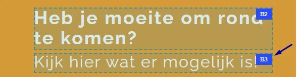
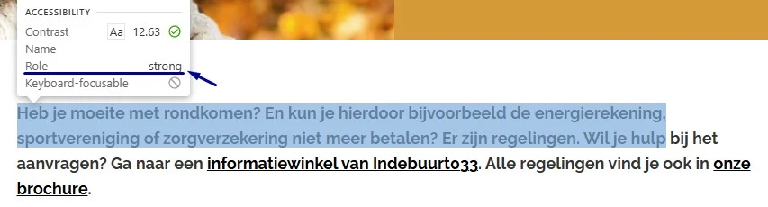
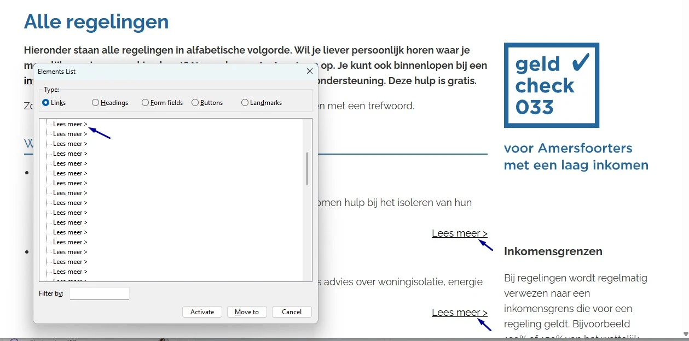
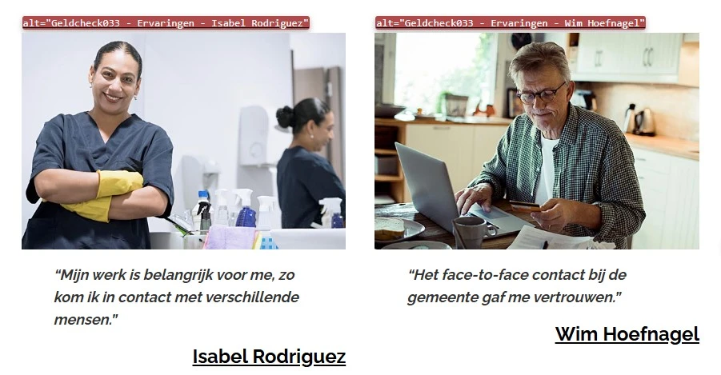
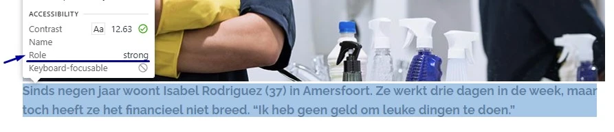
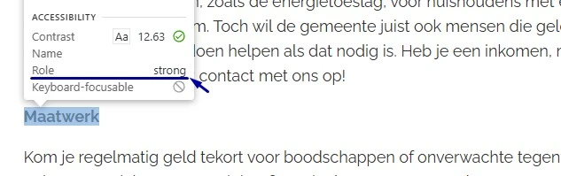
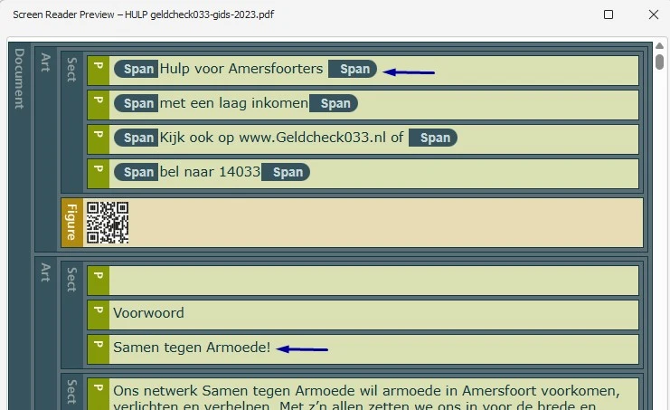
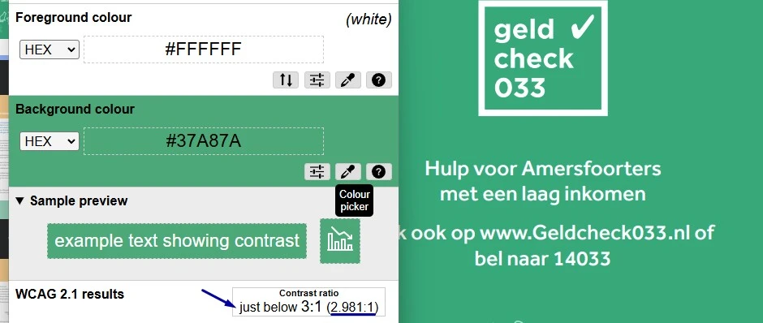
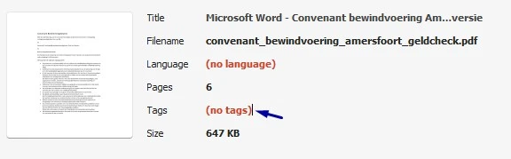

Audit digitale toegankelijkheid van website geldcheck033.nl
Samenvatting
Wij hebben de website www.geldcheck033.nl onderzocht tussen 1 en 10 augustus 2026. Op dit moment is een deel van de succescriteria als voldoende beoordeeld. In dit rapport lees je welke punten nog verbetering behoeven en hoe deze kunnen worden aangepakt.
Op alle pagina's staan de grote witte teksten "Heb je moeite om rond te komen?" en "Kijk hier wat er mogelijk is!" op een oranje achtergrond met kleurcode #dd9933. De contrastverhouding is 2,4:1. Voor grote tekst geldt een minimum van 3,0:1. Grote tekst is tekst van minimaal 18pt, of minimaal 14pt vetgedrukt. Grote letters zijn makkelijker te lezen, maar bezoekers met een visuele beperking hebben ook daar genoeg contrast voor nodig. Met te weinig contrast is de tekst moeilijk of niet te lezen.
User story
Ik heb een visuele beperking. Als ik grote tekst lees, dan kan ik die niet goed onderscheiden van de achtergrond. Ik verwacht dat grote tekst altijd genoeg contrast heeft om leesbaar te zijn.
Hoe te testen
Draai axe of Lighthouse voor een geautomatiseerde contrastcontrole en meet de twijfelgevallen daarna met de hand na met de Colour Contrast Analyser. Het minimum is 4,5:1 voor normale tekst en 3,0:1 voor grote tekst. Vergeet placeholders, tekst op afbeeldingen en elementen die uitgeschakeld lijken niet.
Oplossing
Pas de tekstkleur of de achtergrondkleur aan, zodat de contrastverhouding minimaal 3,0:1 is. Controleer het resultaat met een contrasttool zoals de Colour Contrast Analyser.
#2 - Tekst is geen kop, maar staat wel in een h3-element
Impact: MediumType: InhoudWCAG: 1.3.1EN: 9.1.3.1

De tekst "Kijk hier wat er mogelijk is!" staat op alle pagina's in een h3-element, terwijl het geen kop is. Het kop-element is hier alleen gebruikt om de letters groter te maken. Er volgt geen inhoud die bij deze kop hoort. Koppen brengen structuur aan in een pagina en bezoekers met een schermlezer navigeren erop. Een kop die geen inhoud aankondigt, verstoort dat beeld.
User story
Ik lees de website met een schermlezer. Als ik langs de koppen navigeer, dan kom ik een kop tegen die geen echte inhoud aankondigt. Ik verwacht dat elke kop het begin van een nieuw onderdeel markeert.
Hoe te testen
Controleer het met een schermlezer: navigeer met H in NVDA en JAWS, of met de rotor in VoiceOver. Hoor je een kop die je zelf geen sectietitel zou noemen, dan is het kop-element verkeerd gebruikt.
Oplossing
Verwijder het h3-element en gebruik een p-element. De gewenste opmaak breng je aan met CSS.
De links in de header, zoals "Home", veranderen van kleur zodra de muis erover beweegt. De contrastverhouding van die tekst is dan 3,2:1. Voor normale tekst geldt een minimum van 4,5:1. Tekst op informatieve elementen moet in elke staat genoeg contrast houden, dus ook als het element focus krijgt of als de muis eroverheen beweegt.
User story
Ik heb een visuele beperking. Als ik met de muis over een link of knop beweeg, dan wordt de tekst soms slecht leesbaar doordat het contrast te laag is. Ik verwacht dat de tekst in elke staat goed leesbaar blijft.
Hoe te testen
Meet de contrasten met de Colour Contrast Analyser. Kun je de exacte pixel niet selecteren, zoek de kleurwaarde dan op in de inspector van de browser. Het gaat om het contrast van het element tegenover de achtergrond.
Oplossing
Zorg dat de tekst ook bij hover een contrast van minimaal 4,5:1 heeft met de achtergrond.
#4 - Focusindicator is niet zichtbaar in de cookiebanner
De toetsenbordfocus is niet zichtbaar op de interactieve elementen in de cookiebanner. In de CSS staat outline: 0, zonder dat daar een eigen zichtbare focusindicator voor in de plaats komt. Bezoekers die met het toetsenbord navigeren, zien daardoor niet welk element focus heeft.
User story
Ik bedien de website met het toetsenbord. Als ik door de cookiebanner ga, dan zie ik niet welk element focus heeft. Ik verwacht dat ik altijd duidelijk zie waar ik ben in de banner.
Hoe te testen
Ga met de Tab-toets langs elk focusbaar element in de cookiebanner en controleer of je steeds ziet waar de focus staat. Zoek in de CSS naar outline: 0 zonder vervanging.
Oplossing
Geef de interactieve elementen in de cookiebanner een zichtbare toetsenbordfocusindicator. Haal je de standaard focusindicator van de browser weg met outline: 0, geef dan zelf een even goed zichtbare focusstijl terug.
#5 - Focus is niet meer zichtbaar doordat de cookiebanner een deel van de pagina bedekt
Bij een eerste bezoek verschijnt er een cookiebanner. De toetsenbordfocus komt daarna terecht op elementen die achter die banner liggen. Daardoor is niet te zien waar de focus staat. Bij inzoomen wordt het probleem groter. Elementen die focusbaar zijn mogen nooit volledig door andere content bedekt worden. Er moet altijd een gedeelte zichtbaar zijn, hoe klein ook.
User story
Als ik met de Tab-toets door de pagina ga, dan verdwijnt de focus achter de cookiebanner. Ik verwacht dat ik altijd zie welk element focus heeft.
Hoe te testen
Ga met de Tab-toets door de pagina terwijl de cookiebanner in beeld staat. Bij elke stap moet het element met de focus geheel of gedeeltelijk zichtbaar zijn. Controleer dit ook met een ingezoomde pagina.
Oplossing
Zorg dat de cookiebanner goed meeschaalt, zodat de focus zichtbaar blijft.
#6 - Footer heeft geen kop
Impact: AdviesType: InhoudWCAG: 1.3.1EN: 9.1.3.1
In de footer staan contactgegevens, een copyrighttekst en links naar het privacybeleid. Er staat geen kop boven. Bezoekers die met een schermlezer op koppen navigeren, merken daardoor niet dat de footer begint. Dit is een aanbeveling: de footer is al een footer-element en daarmee een landmark, dus dit onderdeel is wel te vinden. Een kop maakt het makkelijker.
User story
Ik lees de website met een schermlezer. Als ik langs de koppen navigeer, dan vind ik geen kop voor de footer. Ik verwacht dat elk onderdeel van de pagina een kop heeft, zodat ik weet waar ik ben.
Hoe te testen
Navigeer met een schermlezer op koppen: de H-toets in NVDA of JAWS, de rotor in VoiceOver. Controleer of de footer een kop heeft die het onderdeel benoemt.
Oplossing
Zet een visueel verborgen kop boven de footer, bijvoorbeeld:
<h2class="sr-only">Contact en overige informatie</h2>
Verberg die kop met CSS voor ziende bezoekers, zodat schermlezers hem wel voorlezen.
Bij een schermresolutie van 1280 bij 1024 pixels en 400% zoom, wat neerkomt op een breedte van 320 pixels, valt de tekst "Privacy instellingen" deels weg. Inzoomen tot 400% mag de leesbaarheid van informatieve elementen niet aantasten.
User story
Ik heb een visuele beperking. Als ik ver inzoom op de pagina, dan valt een deel van de tekst buiten beeld. Ik verwacht dat alle tekst zichtbaar en leesbaar blijft, ook bij sterk inzoomen.
Hoe te testen
Zet de browser op een breedte van 320 CSS-pixels, of op 1280 pixels met 400% zoom, en scroll verticaal. Om de inhoud te lezen mag horizontaal scrollen niet nodig zijn. Alleen echte tweedimensionale inhoud zoals tabellen, kaarten en code is daarop een uitzondering. Let op banners, headers met een vaste breedte en lange URL's.
Oplossing
Zorg dat alles blijft werken en leesbaar blijft bij 400% zoom op een scherm van 1280 bij 1024 pixels.
#8 - strong-element gebruikt voor opmaak in plaats van betekenis
Impact: KleinType: InhoudWCAG: 1.3.1EN: 9.1.3.1

Op deze pagina staat de tekst die begint met "Heb je moeite met rondkomen? En kun ..." in een strong-element, terwijl de inhoud geen nadruk nodig heeft. Het strong-element betekent "belangrijk". Schermlezers veranderen daar vaak hun toon voor. Wordt het element voor opmaak gebruikt in plaats van voor betekenis, dan krijgen willekeurige woorden nadruk en verandert de betekenis van de gesproken tekst.
User story
Ik lees de website met een schermlezer. Als ik naar een tekst luister, dan klinken er ineens woorden met nadruk die helemaal niet benadrukt hoefden te worden. Ik verwacht dat alleen echt belangrijke woorden extra nadruk krijgen.
Hoe te testen
Loop de pagina door als redacteur en bekijk elk vet of cursief woord. Vraag je per fragment af: is dit woord echt belangrijk, of zou je het in spraak benadrukken? Zo niet, dan hoort het niet in een strong- of em-element, maar in een CSS-opmaak.
Oplossing
Wil je tekst alleen visueel laten opvallen, gebruik dan CSS, bijvoorbeeld met een eigen class-attribuut en font-weight: bold.
Op deze pagina staan de groene teksten "Gemeente Amersfoort", "Indebuurt033" en "Geldloket" met kleurcode #01a477 op een witte achtergrond. De contrastverhouding is 3,2:1. Voor normale tekst geldt een minimum van 4,5:1. Normale tekst is tekst kleiner dan 18pt, of kleiner dan 14pt vetgedrukt. Met te weinig contrast is tekst moeilijk of niet te lezen voor bezoekers met een visuele beperking, bezoekers die kleuren minder goed onderscheiden en iedereen die naar een scherm kijkt in fel licht.
User story
Ik heb een visuele beperking. Als ik een pagina lees, dan kan ik tekst met weinig contrast niet onderscheiden. Ik verwacht dat tekst altijd duidelijk afsteekt tegen de achtergrond.
Hoe te testen
Meet het contrast tussen de tekst en de achtergrond met een contrasttool zoals axe DevTools, de Colour Contrast Analyser of Stark. Test de tekst op de grootte en de dikte waarin hij normaal in beeld komt. Voor uitgeschakelde bedieningselementen geldt de eis niet.
Oplossing
Pas de tekstkleur of de achtergrondkleur aan, zodat de contrastverhouding minimaal 4,5:1 is.
Op deze pagina staat onder de kop "Sitemap" een groep links. Visueel is duidelijk dat die links bij elkaar horen, maar in de HTML-code is die relatie niet vastgelegd. Als het voor een ziende bezoeker duidelijk is dat een groep links bij elkaar hoort, dan moet die structuur ook in de code staan. Anders merken bezoekers met hulpsoftware niet waar de groep begint en eindigt.
User story
Ik lees de website met een schermlezer. Als ik door de navigatie ga, dan hoor ik losse links zonder dat duidelijk is dat ze bij elkaar horen. Ik verwacht dat mijn schermlezer aangeeft wanneer links een groep vormen.
Hoe te testen
Loop de pagina door met DevTools en een schermlezer. Worden meerdere links visueel als groep gepresenteerd, dan moet die groepering ook in de HTML zelf bestaan, niet alleen via witruimte, randen of gedeelde opmaak.
Oplossing
Leg de relatie tussen de links vast in de code. Plaats de links bijvoorbeeld in een ul-element met meerdere li-elementen, of binnen een nav-element. Daardoor is ook voor hulpsoftware duidelijk dat de links bij elkaar horen.
#11 - Sitemap is niet actueel
Impact: GrootType: InhoudWCAG: 2.4.5EN: 9.2.4.5
De sitemap is bedoeld als tweede manier om pagina's te vinden, naast de navigatie. Op deze pagina ontbreken bestaande pagina's van de website. Bijvoorbeeld:
Doordat de sitemap achterloopt op de website, is hij geen volwaardige tweede manier om inhoud te vinden.
User story
Ik gebruik de sitemap om een pagina te vinden. Als ik een recente pagina zoek, dan staat die er niet in. Ik verwacht dat de sitemap compleet en actueel is.
Hoe te testen
Vergelijk de pagina's in de sitemap met de pagina's die via de navigatie of via andere links te bereiken zijn. Controleer of elke bestaande pagina ook in de sitemap staat.
Oplossing
Zorg dat de sitemap alle relevante pagina's bevat en actueel blijft zodra er pagina's bij komen, verdwijnen of een andere naam krijgen.
Op deze pagina staan selectievakjes die niet aan hun zichtbare label gekoppeld zijn. Het gaat om de selectievakjes onder "Doelgroepen" en "Overige", bijvoorbeeld "Ouderen", "(ex-)ondernemers", "Jongeren", "Berbers" en "Engels".
Het for-attribuut van de bijbehorende label-elementen komt niet overeen met de id van het selectievakje. Meerdere labels verwijzen naar hetzelfde selectievakje, waardoor de rest van de selectievakjes geen gekoppeld label heeft.
Daardoor kan hulpsoftware de toegankelijke naam van deze selectievakjes niet bepalen. Wie op het zichtbare label klikt, zet bovendien het verkeerde selectievakje aan of uit. En bezoekers die de website met hun stem bedienen, kunnen het bedoelde selectievakje niet aanzetten door het zichtbare label uit te spreken.
User story
Ik gebruik de website met een schermlezer. Als ik naar een selectievakje navigeer, dan hoor ik geen naam. Ik weet niet waar dit selectievakje voor bedoeld is.
Hoe te testen
Bekijk in DevTools het for-attribuut van elk label-element en controleer of het overeenkomt met de id van het juiste selectievakje. Controleer met een schermlezer of elk selectievakje de juiste toegankelijke naam heeft. Test daarna de spraakbesturing: spreek "Klik [zichtbaar label]" uit en controleer of het juiste selectievakje reageert.
Oplossing
Koppel elk label-element aan het juiste selectievakje door het for-attribuut gelijk te maken aan de id van dat selectievakje. Elk selectievakje heeft een unieke id nodig en elk label verwijst naar precies die id. Daarmee krijgt elk selectievakje de juiste toegankelijke naam en werken zowel het klikken op het label als de spraakbesturing.
#13 - Bij 400% zoom verschijnt een horizontale scrollbalk door lange woorden
Op deze pagina verschijnt een horizontale scrollbalk als je inzoomt tot 400%. Dat komt door lange woorden zoals "beschermingsbewindvoerder". Zulke woorden passen niet in hun container en duwen de pagina breder.
Horizontaal scrollen is niet toegestaan, ook niet bij een breedte van 320 CSS-pixels voor verticale inhoud of een hoogte van 256 CSS-pixels voor horizontale inhoud. Scrollen in twee richtingen mag alleen als dat echt nodig is voor de betekenis of de bediening van de inhoud. Tabellen, betekenisvolle afbeeldingen en kaarten zijn daarop een uitzondering: die moeten leesbaar blijven, dus daarbinnen mag wel gescrold worden.
User story
Ik zoom in tot 400% om de pagina te lezen. Als ik inzoom, dan verschijnt er een horizontale scrollbalk en moet ik heen en weer scrollen om een zin te lezen. Ik verwacht dat de tekst vanzelf binnen de breedte van mijn scherm past.
Hoe te testen
Zet de browser op een breedte van 1280 pixels, zoom in tot 400% en ververs de pagina. Scroll verticaal door de pagina en controleer of horizontaal scrollen nodig is om de inhoud te lezen.
Oplossing
Gebruik de CSS-eigenschap overflow-wrap: break-word of word-break: break-word, zodat lange woorden op de volgende regel verder kunnen. Daarmee lopen ze niet meer buiten hun container.
Op deze pagina staan onderdelen met verborgen inhoud. Het element waarmee je die inhoud open- en dichtklapt, heeft geen knop-rol. Bezoekers met een schermlezer horen daardoor niet dat het element interactief is. Zonder de juiste rol kondigt hulpsoftware het element niet aan als knop en is de accordeon voor deze bezoekers niet te gebruiken.
User story
Ik navigeer met het toetsenbord en gebruik een schermlezer. Als ik bij een accordeon kom, dan vertelt mijn schermlezer niet dat ik een knop kan gebruiken om het onderdeel te openen. Ik verwacht dat elke accordeonkop wordt aangekondigd als knop die ik kan indrukken.
Hoe te testen
Bekijk elk interactief onderdeel met het toegankelijkheidspaneel van DevTools en met een schermlezer. Elk onderdeel moet overbrengen wat het is, hoe het heet, in welke staat het staat en welke waarde het eventueel heeft. Kies daarbij liever standaard-HTML dan eigen ARIA.
Oplossing
Gebruik een kop-element met daarin een button-element, bijvoorbeeld:
<h2><button>Titel van het onderdeel</button></h2>
Daarmee krijgt het element de juiste knop-rol en kondigen schermlezers het aan als interactief.
#15 - Open- of dichtstatus van de accordeon ontbreekt in de code
Impact: GrootType: TechniekWCAG: 4.1.2EN: 9.4.1.2
Op deze pagina staan onderdelen met verborgen inhoud, bijvoorbeeld "Hulp bij isolatie van de woning", "Advies voor energiebesparing" en "Dierenartskosten". Of een onderdeel open of dicht staat, is visueel wel te zien, maar staat niet in de code. Hulpsoftware kan die status daardoor niet doorgeven.
User story
Ik lees de website met een schermlezer. Als ik een accordeon open, dan hoor ik niet of het onderdeel open of dicht staat. Ik verwacht dat mijn schermlezer vertelt of een onderdeel uitgeklapt of ingeklapt is.
Hoe te testen
Bekijk elk interactief onderdeel met het toegankelijkheidspaneel van DevTools en met een schermlezer. Elk onderdeel moet overbrengen wat het is, hoe het heet, in welke staat het staat en welke waarde het eventueel heeft.
Oplossing
Dit is op twee manieren op te lossen:
Voeg het attribuut aria-expanded toe aan het element dat het paneel open- en dichtklapt. De waarde is true als het paneel open staat en false als het dicht staat. Werk die waarde bij zodra de status verandert.
Of voeg visueel verborgen tekst toe die de status benoemt, bijvoorbeeld "(open)" of "(dicht)", en werk die tekst bij zodra de status verandert. Schermlezers lezen die tekst voor, ziende bezoekers zien hem niet.
#16 - Accordeon is niet met het toetsenbord te bedienen
Impact: GrootType: TechniekWCAG: 2.1.1EN: 9.2.1.1
Op deze pagina zijn de elementen met de teksten "Hulp bij isolatie van de woning", "Advies voor energiebesparing", "Dierenartskosten" en vergelijkbare teksten niet met het toetsenbord te bedienen. Bezoekers die alleen het toetsenbord gebruiken, moeten elk interactief element kunnen bedienen: links, knoppen, formulieren, uitklaplijsten, tabbladen, schuifregelaars en accordeons.
De accordeon moet volledig met het toetsenbord te bedienen zijn. Meestal betekent dat: met de pijltjestoetsen tussen de koppen navigeren, met Enter of de spatiebalk een onderdeel open- en dichtklappen, en met ARIA-attributen de status doorgeven aan hulpsoftware. Zie ook het voorbeeld van een toegankelijke accordeon in de ARIA Authoring Practices Guide.
User story
Ik bedien de website met het toetsenbord. Als ik naar een accordeon navigeer, dan krijg ik hem zonder muis niet open. Ik verwacht dat ik elke accordeon met alleen mijn toetsenbord kan openen.
Hoe te testen
Leg de muis weg en loop met Tab, Enter, de spatiebalk en de pijltjestoetsen door de pagina. Elke link, knop, elk formulierveld en elk eigen onderdeel moet bereikbaar en bedienbaar zijn. Let op onclick-afhandeling zonder toetsenbordvariant en op onderdelen die alleen met slepen werken.
Oplossing
Zorg dat alles wat aanklikbaar is, ook met het toetsenbord werkt.
#17 - Linktekst "Lees meer" beschrijft de bestemming niet
Impact: MediumType: InhoudWCAG: 2.4.4EN: 9.2.4.4

Na een klik op "Open alle regelingen in 1 keer" verschijnen er meerdere links met de tekst "Lees meer >". Die tekst zegt niet waar de link heen gaat. De aanvullende informatie staat alleen in het title-attribuut, en dat bereiken bezoekers met een schermlezer of met het toetsenbord vaak niet.
Linkteksten zoals "Lees meer" of "Klik hier" moeten een duidelijk onderscheidende en beschrijvende linktekst krijgen, eventueel deels visueel verborgen. Als meerdere links met dezelfde linktekst naar verschillende pagina's leiden, moeten die teksten worden aangevuld zodat ze genoeg van elkaar verschillen.
User story
Ik lees de website met een schermlezer. Als ik de lijst met links op de pagina opvraag, dan zie ik alleen "Lees meer" staan. Ik kan niet zien waar elke link heen gaat. Ik verwacht dat elke link zijn bestemming beschrijft.
Hoe te testen
Open met een schermlezer de lijst met links, in NVDA met Insert+F7, en beoordeel elke link los van zijn omgeving. Controleer of de linktekst alleen al de bestemming beschrijft. Het title-attribuut mag niet de enige plek zijn waar die informatie staat.
Oplossing
Zorg dat elke linktekst de bestemming beschrijft. Vul elke "Lees meer"-link aan met visueel verborgen tekst, bijvoorbeeld:
<ahref="">Lees meer <spanclass="sr-only">over [naam van de regeling]</span></a>
Onder de kop "Dit zijn de partners van Geldcheck033" staan partnerlogo's die tegelijk links zijn. De zichtbare tekst in die logo's staat niet in het tekstalternatief. Dat gebeurt op twee manieren.
De afkorting in het logo ontbreekt in de toegankelijke naam:
het logo met de tekst "SFA" heeft als toegankelijke naam "Logo Sociaal fonds Amersfoort";
het logo met de tekst "NVA Centrum voor integratie en participatie" heeft als toegankelijke naam "Logo Centrum voor integratie en participatie";
het logo met de tekst "SVB" heeft als toegankelijke naam "Logo Sociale Verzekeringsbank";
het logo met de tekst "GBLT" heeft als toegankelijke naam "Logo Gemeente- en waterschapsbelastingen".
Of de aanvullende tekst in het logo ontbreekt:
in het logo "Pact Sam Sam" staat ook "Samen tegen armoede", maar de toegankelijke naam is alleen "Logo Pact Sam Sam";
in het logo "Protestantse Gemeente Amersfoort" staat ook "inspirerend dichtbij", en die tekst ontbreekt in het tekstalternatief;
in het logo "Dienst Uitvoering Onderwijs" staat ook "Ministerie van Onderwijs, Cultuur en Wetenschap", en ook die tekst ontbreekt.
Bezoekers met een schermlezer krijgen daardoor niet dezelfde informatie als ziende bezoekers. En bezoekers die de website met hun stem bedienen, kunnen de link niet activeren door de zichtbare tekst uit te spreken.
User story
Ik bedien de website met mijn stem. Als ik "Klik SFA" zeg, dan reageert de link niet, omdat de toegankelijke naam niet overeenkomt met de tekst die ik zie.
Hoe te testen
Bekijk elke logolink in DevTools. Vergelijk de zichtbare tekst in het logo met het tekstalternatief en controleer of alle zichtbare tekst daarin terugkomt. Test daarna de spraakbesturing: spreek "Klik [zichtbare tekst]" uit en controleer of de juiste link reageert.
Oplossing
Vul het tekstalternatief van elke logolink aan met de zichtbare tekst, en zet die tekst vooraan. Bijvoorbeeld:
#19 - Decoratieve afbeelding is niet verborgen voor schermlezers
Impact: AdviesType: InhoudWCAG: 1.1.1EN: 9.1.1.1

Op deze pagina zijn twee afbeeldingen tegelijk een link. Hun tekstalternatief is "Geldcheck033 - Ervaringen - Isabel Rodriguez" en "Geldcheck033 - Ervaringen - Wim Hoefnagel". Direct onder elke afbeelding staat al een link met de tekst "Isabel Rodriguez" en "Wim Hoefnagel", naar dezelfde pagina. Bezoekers met een schermlezer horen de bestemming daardoor twee keer.
Dit is een aanbeveling. De afbeeldingslinks hebben een bruikbare naam, dus ze zijn niet afgekeurd. Het luisteren wordt wel rustiger als de herhaling verdwijnt.
User story
Ik lees de website met een schermlezer. Als ik bij deze afbeeldingslinks kom, dan hoor ik dezelfde bestemming twee keer. Ik verwacht dat ik elke link één keer tegenkom.
Hoe te testen
Navigeer met een schermlezer naar de afbeeldingslinks en luister wat er wordt voorgelezen. Beoordeel of het tekstalternatief informatie toevoegt of alleen herhaalt wat de tekstlink eronder al zegt.
Oplossing
Verberg de afbeelding voor hulpsoftware met aria-hidden="true" en haal de link om de afbeelding weg. Moet de afbeelding aanklikbaar blijven, vergroot de bestaande tekstlink dan met CSS zodat die het vlak van de afbeelding bedekt.
#20 - strong-element gebruikt voor opmaak in plaats van betekenis
Impact: KleinType: InhoudWCAG: 1.3.1EN: 9.1.3.1

Op deze pagina staat de tekst die begint met "Sinds negen jaar ..." in een strong-element, terwijl de inhoud geen nadruk nodig heeft. Het strong-element betekent "belangrijk". Schermlezers veranderen daar vaak hun toon voor. Wordt het element voor opmaak gebruikt in plaats van voor betekenis, dan krijgen willekeurige woorden nadruk en verandert de betekenis van de gesproken tekst.
Nadruk is wel op zijn plaats bij een waarschuwing, bij een term op de plek waar die wordt uitgelegd, of bij een woord dat de betekenis van de zin verandert. Productnamen, koppen en decoratieve woorden markeer je niet met strong of em.
User story
Ik lees de website met een schermlezer. Als ik naar een tekst luister, dan klinken er ineens woorden met nadruk die helemaal niet benadrukt hoefden te worden. Ik verwacht dat alleen echt belangrijke woorden extra nadruk krijgen.
Hoe te testen
Klik met de rechtermuisknop op het vette of cursieve woord en kies "Inspecteren". Staat het woord in een strong- of em-element zonder dat er een inhoudelijke reden voor nadruk is, dan hoort die opmaak in de CSS.
Oplossing
Gebruik strong alleen als een woord of zinsdeel echt belangrijk is, of in spraak benadrukt zou worden. Wil je tekst alleen visueel laten opvallen, gebruik dan CSS, bijvoorbeeld met een eigen class-attribuut en font-weight: bold of font-style: italic.
#21 - strong-element gebruikt in plaats van een kop
Impact: MediumType: InhoudWCAG: 1.3.1EN: 9.1.3.1

Op deze pagina is de tekst "Maatwerk" visueel opgemaakt als kop, maar in de code is dat niet het geval. Er staat een strong-element om de tekst, zodat hij op een kop lijkt. Het strong-element is bedoeld voor nadruk, niet voor koppen. Wie het in plaats van een kop-element gebruikt, geeft de structuur van de pagina verkeerd weer en maakt die structuur onbruikbaar voor hulpsoftware.
User story
Ik lees de website met een schermlezer. Als ik op koppen navigeer, dan mis ik titels die alleen vet of cursief zijn. Ik verwacht dat alle titels echte koppen zijn, zodat ik de opbouw van de pagina kan volgen.
Hoe te testen
Controleer het met een schermlezer: navigeer met H in NVDA en JAWS, of met de rotor in VoiceOver. Elke visuele kop moet worden aangekondigd als kop.
Oplossing
Verwijder het strong-element en gebruik het juiste kop-element voor deze tekst.
In de documenteigenschappen van deze PDF staat geen titel. Een PDF hoort een titel te hebben die het doel of de inhoud beschrijft. Die titel verschijnt dan in de titelbalk, in plaats van de bestandsnaam. Zo zien bezoekers meteen of het document is wat ze zoeken. De titel stel je in in het bronbestand of in de documenteigenschappen van de PDF.
User story
Ik lees de website met een schermlezer. Als ik een PDF open, dan hoor ik alleen een nietszeggende bestandsnaam. Ik verwacht dat mijn schermlezer een duidelijke documenttitel voorleest, zodat ik weet wat ik open.
Hoe te testen
Open de PDF in de browser, ga naar de documenteigenschappen via het menu met de drie puntjes en controleer het veld "Titel".
Oplossing
Voeg een beschrijvende titel toe aan de documenteigenschappen van de PDF. In Adobe Acrobat gaat dat via Bestand, Eigenschappen, tabblad Beschrijving. Zorg dat de titelbalk daarna de titel toont in plaats van de bestandsnaam.
#23 - Koppen zijn niet als kop gemarkeerd
Impact: MediumType: InhoudWCAG: 1.3.1EN: 9.1.3.1

In deze PDF zijn verschillende teksten visueel opgemaakt als kop, maar in de codes van het document is dat niet het geval. Bijvoorbeeld "Hulp voor Amersfoorters met een laag inkomen", "Samen tegen Armoede!" en "Hulp dichtbij". Daardoor wijkt de zichtbare structuur af van de structuur in de codes.
User story
Ik lees de website met een schermlezer. Als ik op koppen door een document navigeer, dan mis ik koppen die ik wel zie staan. Ik verwacht dat elke zichtbare kop door mijn schermlezer als kop wordt aangekondigd.
Hoe te testen
Draai de ingebouwde toegankelijkheidscontrole van PAC, de PDF Accessibility Checker, voor een geautomatiseerde scan. Controleer daarna met een schermlezer of de structuur klopt als je het document van boven naar beneden leest.
Oplossing
Vervang de P-tag door een H1- tot H6-tag, zodat de structuur in de codes overeenkomt met wat er zichtbaar in het document staat.
#24 - Decoratieve afbeeldingen zijn toegevoegd met figure-tags
Impact: MediumType: InhoudWCAG: 1.1.1EN: 9.1.1.1
Op pagina 1 van deze PDF staat een decoratieve afbeelding die is gemarkeerd als Figure, zonder beschrijving. Hetzelfde gebeurt op pagina 2, pagina 3 en verder. De Figure-tag is bedoeld voor informatieve afbeeldingen en vraagt om een beschrijving.
User story
Ik lees de website met een schermlezer. Als ik door het document navigeer, dan kondigt mijn schermlezer elke decoratieve afbeelding aan zonder dat ik er iets aan heb. Ik verwacht dat mijn schermlezer decoratieve afbeeldingen overslaat.
Hoe te testen
Draai PAC, de PDF Accessibility Checker, voor een geautomatiseerde controle. Lees het document daarna met een schermlezer en controleer of er geen bestandsnamen of het woord "afbeelding" worden voorgelezen.
Oplossing
Markeer deze decoratieve afbeeldingen als artefact. Schermlezers proberen ze dan niet meer te interpreteren.
#25 - Kleurcontrast van grote tekst is te laag
Impact: MediumType: InhoudWCAG: 1.4.3EN: 9.1.4.3

In deze PDF staat de witte tekst "Hulp voor Amersfoorters met een laag inkomen" op een groene achtergrond met kleurcode #37A87A. De contrastverhouding is 2,96:1 en moet minimaal 3,0:1 zijn. Dezelfde combinatie komt op meer pagina's terug, onder andere bij de paginanummers.
Zie ook:
de witte tekst "Hulp dichtbij" op een oranje achtergrond met kleurcode #EB931A. De contrastverhouding is 2,4:1. Deze combinatie komt ook op andere pagina's voor.
de oranje tekst "Kinderen / jongeren" met kleurcode #EB931A op een witte achtergrond. De contrastverhouding is 2,4:1.
User story
Ik heb een visuele beperking en heb goed contrast nodig. Zonder dat contrast kan ik de tekst niet goed lezen.
Hoe te testen
Open de PDF in een browser of een PDF-lezer en meet het contrast tussen de tekst en de achtergrond met de Colour Contrast Analyser. Controleer of het contrast voldoet aan de eis die hoort bij de grootte en de dikte van de tekst.
Oplossing
Zorg dat het contrast minimaal 3,0:1 is.
#26 - Kleurcontrast van kleine tekst is te laag
Impact: MediumType: InhoudWCAG: 1.4.3EN: 9.1.4.3
In deze PDF staan de groene teksten "Coaches Participatie en inkomen", "Informatiewinkels" en "Voor wie?" met kleurcode #37A87A op een witte achtergrond. De contrastverhouding is 3,0:1 en moet minimaal 4,5:1 zijn.
Zie ook:
op pagina 4 staan rode paginanummers met kleurcode #D45A30 op een witte achtergrond, bijvoorbeeld 8, 20 en 9. De contrastverhouding is 4,0:1. Deze combinatie komt ook op andere pagina's van deze PDF voor.
User story
Ik heb een visuele beperking en heb goed contrast nodig. Zonder dat contrast kan ik de tekst niet goed lezen.
Hoe te testen
Draai PAC, de PDF Accessibility Checker, voor een geautomatiseerde contrastcontrole en meet de twijfelgevallen daarna na met de Colour Contrast Analyser op een schermafdruk van de pagina. Het minimum is 4,5:1 voor normale tekst en 3,0:1 voor grote tekst. Vergeet tekst op achtergrondafbeeldingen, watermerken, placeholders in formuliervelden en voetnoten niet.
Oplossing
Pas de tekstkleur of de achtergrondkleur aan, zodat de contrastverhouding minimaal 4,5:1 is. Controleer de nieuwe kleurcombinatie met de Colour Contrast Analyser voordat je de PDF publiceert.
In de metadata van deze PDF is de taal niet ingesteld. De taal hoort ingesteld te zijn, zodat een schermlezer de inhoud in de juiste taal uitspreekt. Dat stel je in bij de documenteigenschappen.
User story
Ik lees PDF's met een schermlezer. Ik verwacht dat in elke PDF de taal is ingesteld. Zonder die instelling gokt mijn schermlezer en gebruikt hij de verkeerde uitspraak.
Hoe te testen
Open de PDF in PAC, de PDF Accessibility Checker, en controleer de taalcode.
Oplossing
Stel de taal in bij de documenteigenschappen van de PDF. In Adobe Acrobat gaat dat via Bestand, Eigenschappen, tabblad Geavanceerd, bij het veld Taal.
#28 - Structuur van het PDF-document is niet in codes vastgelegd
Impact: MediumType: InhoudWCAG: 1.3.1EN: 9.1.3.1

Deze PDF heeft geen tags. Daardoor is de inhoud niet toegankelijk voor schermlezers. Zonder tags is een deel van het onderzoek ook niet uit te voeren: alle succescriteria die over de taglaag gaan, zoals koppen en tekstalternatieven bij afbeeldingen, zijn niet te beoordelen. Als de tags worden toegevoegd, kunnen daar dus nieuwe bevindingen uit voortkomen.
User story
Ik lees de website met een schermlezer. Als ik een PDF open, dan vindt mijn schermlezer geen koppen of structuur in het document. Ik verwacht dat een PDF een structuur heeft, zodat ik de inhoud kan begrijpen.
Hoe te testen
Draai de ingebouwde toegankelijkheidscontrole en PAC, de PDF Accessibility Checker, voor een geautomatiseerde scan. Controleer daarna met een schermlezer of de structuur klopt als je het document van boven naar beneden leest.
Oplossing
Voeg tags toe die de structuur van het document weergeven.
Over dit onderzoek
Leeswijzer
Onze rapporten zijn anders. Bij het bespreken van de gevonden problemen volgen wij niet de structuur van de norm, maar die van jouw website of app. Hierdoor kun je gewoon per pagina of scherm aan de slag gaan. Wel zo makkelijk! Je vindt verderop een overzicht van alle pagina’s met problemen.
We geven je bij elk gevonden issue een paar voorbeelden, maar niet een complete lijst. Controleer zelf of het probleem ook nog op andere plekken voorkomt. Zie het rapport als een leidraad.
Gebruikte norm
Dit onderzoek laat zien in hoeverre de website op dit moment voldoet aan WCAG 2.2, niveau A en AA. WCAG staat voor Web Content Accessibility Guidelines. Dit is de internationale norm voor digitale toegankelijkheid. De Europese norm EN 301 549 bevat alle eisen van WCAG op niveau A en AA.
In dit rapport hebben we korte beschrijvingen van de succescriteria uit de norm opgenomen, met een algemene uitleg erbij. Wil je ze helemaal lezen? Bekijk dan de documentatie van WCAG.
Gebruikte onderzoeksmethode
We gebruiken de onderzoeksmethode WCAG-EM van het W3C. Het proces ziet er als volgt uit:
vaststellen wat binnen en buiten scope valt
vaststellen welke technologieën zijn gebruikt
steekproef (sample) samenstellen
steekproef onderzoeken
gevonden issues beschrijven
Het grootste deel van het onderzoek doen we met de hand. Voor een deel van de toegankelijkheidseisen gebruiken we automatische tools als ondersteuning, zoals axe-core en Chrome Developer Tools.
Belangrijk om te weten
Dit rapport helpt je om de toegankelijkheid van je website te verbeteren. Maar let op: het is geen definitieve, volledige lijst van alle aanwezige toegankelijkheidsproblemen. Dat zit zo:
Het is een steekproef
Ten eerste is het onderzoek gebaseerd op een steekproef. Die is op een betrouwbare manier genomen, en de meeste problemen zullen daardoor zeker aan het licht komen. Toch kan een probleem net buiten de steekproef vallen. Bij een volgend onderzoek kan het wel ontdekt worden.
Op basis van falsificatie
We beoordelen vanuit het principe van falsificatie. Dat houdt in dat we proberen te bewijzen dat iets niet waar is, in plaats van te bevestigen dat het klopt. ‘Voldoet’ betekent daarom dat we geen reden hebben gevonden om een punt af te keuren. Maar als we later wél een reden vinden, kan het alsnog worden afgekeurd.
Voortschrijdend inzicht
Het komt voor dat de beoordeling van een succescriterium op detailniveau verandert. De norm beschrijft namelijk niet élk mogelijk scenario. Samen met andere onderzoeksbureaus overleggen we hoe we met bepaalde situaties omgaan. Zo kan iets dat nu wordt afgekeurd, soms bij een volgend onderzoek worden goedgekeurd en andersom.
Oplossen leidt tot nieuw probleem
Ten slotte kan het gebeuren dat bij het oplossen van een probleem onbedoeld een nieuw toegankelijkheidsprobleem ontstaat. Dat komt dan bij een volgend onderzoek pas naar voren.
Hoe werkt dit rapport?
Bevindingen bekijken en filteren
Alle gevonden toegankelijkheidsproblemen staan onder Gevonden problemen. Je kunt de bevindingen filteren op:
Impact (Groot, Medium, Klein, Advies) — hoe ernstig is het probleem voor de gebruiker?
Type (Content, Techniek) — moet de inhoud of de techniek worden aangepast?
Status (Open, Opgelost) — welke problemen zijn al verholpen?
Voortgang bijhouden
Je kunt je voortgang op twee manieren bijhouden:
CSV-export — exporteer alle bevindingen als CSV-bestand en laad het in een (online) spreadsheet om met je team samen te werken.
Jira-export — exporteer alle bevindingen als Jira-compatibel CSV-bestand. Importeer het via Jira > Issues > Import issues from CSV. Bevindingen worden aangemaakt als bugs met prioriteit op basis van impact.
Registreer in de browser — activeer deze optie om per bevinding bij te houden of het is opgelost. Je voortgang wordt opgeslagen in je browser. Niemand anders kan je resultaat zien. Let op: de voortgang is gekoppeld aan je browser. Als je een andere browser of een ander apparaat gebruikt, begint de telling opnieuw.
Plan van aanpak — download een geprioriteerd plan van aanpak om de gevonden problemen stap voor stap op te lossen. Dit is beschikbaar bij audits vanaf maart 2026.
Link naar een specifieke bevinding delen
Bij elke bevinding verschijnt een link-icoon wanneer je er met de muis overheen gaat. Klik op dit icoon om de directe link naar die bevinding te kopiëren. Je kunt deze link plakken in een e-mail of chatbericht, bijvoorbeeld om een vraag te stellen aan Proper Access over een specifiek punt.